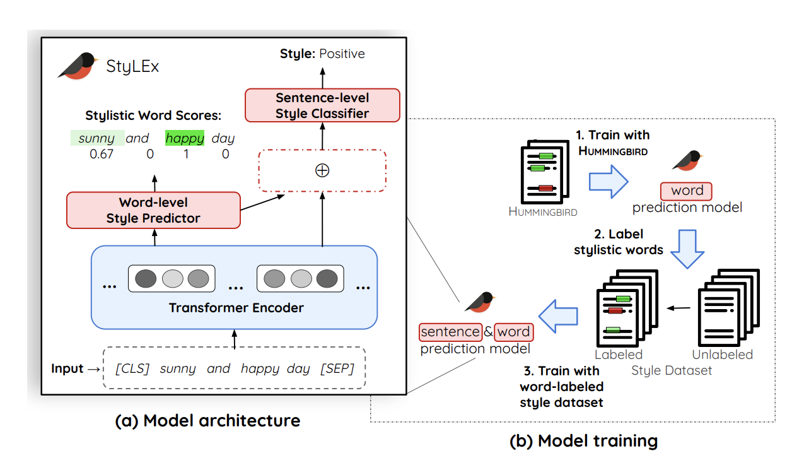
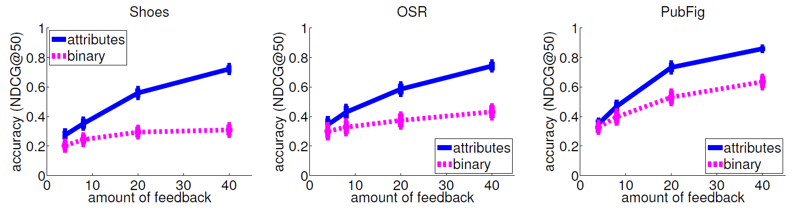

Multi-Dialect Vietnamese TTS
Spring 2026 CSCI 5541 NLP: Class Project - University of Minnesota
Lower Expectations
Cheston Opsasnick
Vy Bui-Nguyen
Annalise Xiao
Quenton Ni
Cheston Opsasnick
Vy Bui-Nguyen
Annalise Xiao
Quenton Ni
One or two sentences on the motivation behind the problem you are solving. One or two sentences describing the approach you took. One or two sentences on the main result you obtained.
A figure that conveys the main idea behind the project or the main application being addressed. This figure is from StyLEx.

If you need to explain more about your figure
What did you try to do? What problem did you try to solve? Articulate your objectives using absolutely no jargon.
Despite rapid advancements in Text-to-Speech (TTS) technology, Vietnamese still remains underrepresented as a low-resource language. This disparity is particularly evident when attempting to synthesize diverse regional dialects. The strict lexical tones and significant phonetic shifts between Northern, Central, and Southern Vietnamese present complex acoustic challenges that traditional synthesis pipelines and English-centric models struggle to resolve without dedicated, dialect-aware fine tuning. To address this gap, this project proposes a multi-dialect Vietnamese TTS system by fine-tuning the F5-TTS architecture.
How is it done today, and what are the limits of current practice?
In recent years, TTS systems have rapidly improved in their naturalness and intelligibility with paradigms like continuous flow matching and audio language models. However, most of these models are based on popular, high resource languages such as English and Mandarin. Previous work has focused on dialect identification and speech recognition for Vietnamese and most existing Vietnamese speech datasets were designed for Automatic Speech Recognition (ASR) and Dialect Identification (DI). However, less attention has been given to generating various dialects with TTS models. For this project, we investigated whether a TTS model trained on northern, central, and southern Vietnamese dialects can accurately generate dialect-specific acoustic characteristics.
Who cares? If you are successful, what difference will it make?
There has been little investigation into how multi-dialect training affects TTS systems. It is unclear whether a TTS model trained on multiple Vietnamese dialects can preserve dialect-specific pronunciation patterns or whether the system tends to produce a more standardized or dominant dialect. This gap highlights the need to examine dialect preservation in generative TTS models. This also raises the question: "When a TTS model is trained on speech data from multiple Vietnamese dialects, can it preserve dialect-specific characteristics, or does it converge toward a dominant dialect during generation?"
If successful, this work could have meaningful implications beyond Vietnamese. Many languages beyond Vietnamese are low-resource and dialect-rich, but remain underserved by modern speech technology. A dialect-aware TTS system for Vietnamese could serve as a blueprint for extending similar approaches to other low-resource languages. More immediate benefits include improving accessibility in applications like screen readers, navigation tools, and voice assistants for Vietnamese speakers from Central and Southern regions who are underrepresented in existing speech tools.
What did you do exactly? How did you solve the problem? Why did you think it would be successful? Is anything new in your approach?
The F5-TTS architecture was utilized for the multi-dialect Vietnamese TTS system. The planned approach is detailed below.
What problems did you anticipate? What problems did you encounter? Did the very first thing you tried work?
One major challenge we anticipated was the scale of the ViMD dataset, which contains over 102 hours of speech data across 63 provincial dialects. We were concerned that processing and training on the full dataset would exceed the compute available on our local devices. We considered using a subset of the data, focusing on samples from the three main regional dialects (Northern, Central, and Southern) to make training more feasible while still preserving dialect variation.
How did you measure success? What experiments were used? What were the results, both quantitative and qualitative? Did you succeed? Did you fail? Why?
The following metrics were used to evaluate the TTS system.
| Experiment | 1 | 2 | 3 |
|---|---|---|---|
| Sentence | Example 1 | Example 2 | Example 3 |
| Errors | error A, error B, error C | error C | error B |

How easily are your results able to be reproduced by others? Did your dataset or annotation affect other people's choice of research or development projects to undertake? Does your work have potential harm or risk to our society? What kinds? If so, how can you address them? What limitations does your model have? How can you extend your work for future research?